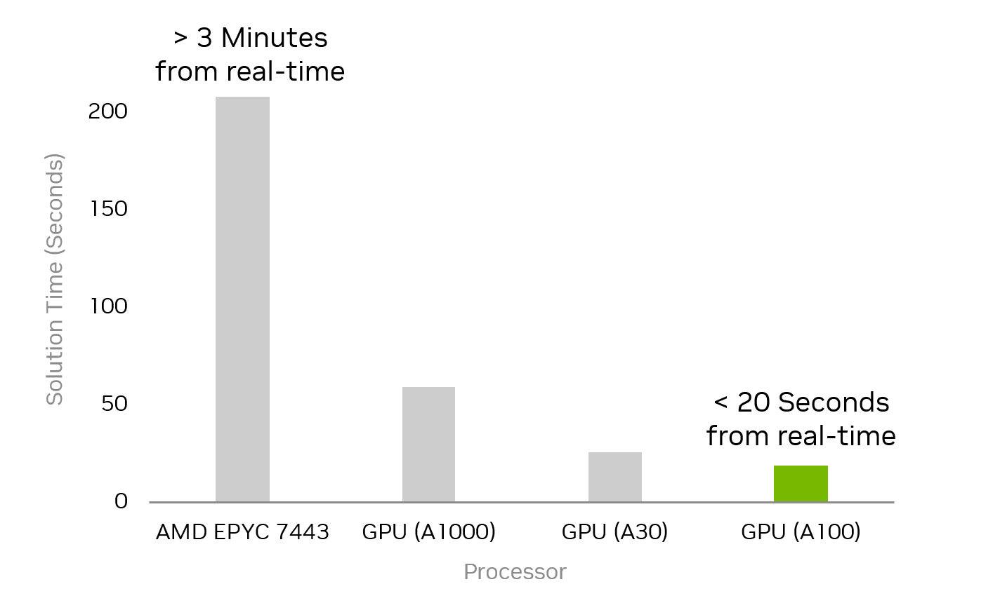

Welcome to
MadSuite
website! Our mission is to deliver optimization software with state-of-the-art GPU acceleration. The performance of GPU-accelerated optimization solvers is successfully demonstrated on the AC optimal power flow problems, optimal control problems, and other large-scale nonlinear optimization problems. For large-scale problems, using GPU acceleration often enables more than an order of magnitude speed-up, as demonstrated with the performance of ExaModels.jl and MadNLP.jl running on GPUs along with CUDSS compared to the state-of-the-art tools on CPUs for solving large AC optimal power flow problems.
 Figure 1: Solution time for AC optimal power flow for the 70k bus system running on different hardware
What's MadSuite?
MadSuite is a suite of open-source optimization software encompassing algebraic modeling systems, optimization solvers, linear solvers, and domain-specific modeling libraries. Our software tools are embedded in the
Julia Language
, which is host a variety of excellent libraries for optimization, such as
JuMP.jl
and
JuliaSmoothOptimizers
, as well as extensive support for GPU programming, such as
CUDA.jl
and
KernelAbstractions.jl
. We employ the latest advancements in GPU computing, such as NVIDIA's
CUDSS
library, to provide high-performance solutions for large-scale nonlinear optimization problems.
News
MadSuite will be presented at IEEE PowerTech 2025 in the tutorial session on GPU-Accelerated Optimization for Power Systems with MadNLP and ExaModels. (June 2025)
Useful Resources
NVIDIA Technology Blog: NVIDIA cuDSS Library Removes Barriers to Optimizing the U.S. Power Grid [ Link ]
Julia Discourse: ExaModels.jl and MadNLP.jl on GPUs [ Link ]
Julia Discourse: AC Optimal Power Flow in various nonlinear optimization frameworks [ Link ]
PowerTech 2025: Tutorial on GPU-Accelerated Optimization for Power Systems with MadNLP and ExaModels [ Link ]
Members
Sungho Shin (@sshin23): Sungho Shin is an assistant professor at the Chemial Engineering Department of Massachusetts Institute of Technology.
François Pacaud (@frapac): François Pacaud is an assistant professor at the Centre Automatique et Systèmes within Mines Paris-PSL.
Alexis Montoison (@amontoison): Alexis Montoison is a postdoctoral researcher at the Argonne National Laboratory.
Packages
MadNLP.jl: A nonlinear programming solver based on the filter line-search interior point method (as in Ipopt) that can handle/exploit diverse classes of data structures, either on host or device memories.
MadIPM.jl: MadIPM.jl is an extension of MadNLP.jl for linear and quadratic programming. It implements the Mehrotra predictor-corrector method, leading to faster convergence than the default filter line-search algorithm used in MadNLP.
ExaModels.jl: An algebraic modeling and automatic differentiation tool in Julia Language, specialized for SIMD abstraction of nonlinear programs.
ExaModelsPower.jl: ExaModelsPower.jl is a Julia package for modeling and solving power systems optimization problems, built on top of ExaModels.jl.
ExaModelsExamples.jl: A collection of examples demonstrating the use of ExaModels.jl for various optimization problems, including power systems, optimal control problems, and COPS benchmark problems.
CUDSS.jl: CUDSS.jl is a Julia interface to the NVIDIA cuDSS library. NVIDIA cuDSS provides three factorizations (LDU, LDLᵀ, LLᵀ) for solving sparse linear systems on GPUs.
Publications
David Cole, Sungho Shin, François Pacaud, Victor M. Zavala, and Mihai Anitescu.
Exploiting GPU/SIMD Architectures for Solving Linear-Quadratic MPC Problems*.
In 2023 American Control Conference (ACC), 3995–4000. May 2023.
doi:10.23919/ACC55779.2023.10155791.
François Pacaud, Michel Schanen, Sungho Shin, Daniel Adrian Maldonado, and Mihai Anitescu.
Parallel interior-point solver for block-structured nonlinear programs on SIMD/GPU architectures.
Optimization Methods and Software, 39(4):874–897, July 2024.
doi:10.1080/10556788.2024.2329646.
François Pacaud, Sungho Shin, Alexis Montoison, Michel Schanen, and Mihai Anitescu.
Condensed-space methods for nonlinear programming on GPUs.
May 2024.
arXiv:2405.14236, doi:10.48550/arXiv.2405.14236.
François Pacaud, Sungho Shin, Michel Schanen, Daniel Adrian Maldonado, and Mihai Anitescu.
Accelerating Condensed Interior-Point Methods on SIMD/GPU Architectures.
Journal of Optimization Theory and Applications, February 2023.
doi:10.1007/s10957-022-02129-5.
Sungho Shin, Mihai Anitescu, and François Pacaud.
Accelerating optimal power flow with GPUs: SIMD abstraction of nonlinear programs and condensed-space interior-point methods.
Electric Power Systems Research, 236:110651, November 2024.
doi:10.1016/j.epsr.2024.110651.
Sungho Shin, Vishwas Rao, Michel Schanen, D. Adrian Maldonado, and Mihai Anitescu.
Scalable Multi-Period AC Optimal Power Flow Utilizing GPUs with High Memory Capacities.
May 2024.
arXiv:2405.14032, doi:10.48550/arXiv.2405.14032.
Videos
Sungho Shin, Large-Scale Nonlinear Programming on GPUs: State-of-the-Art and Future Prospects, April 2024